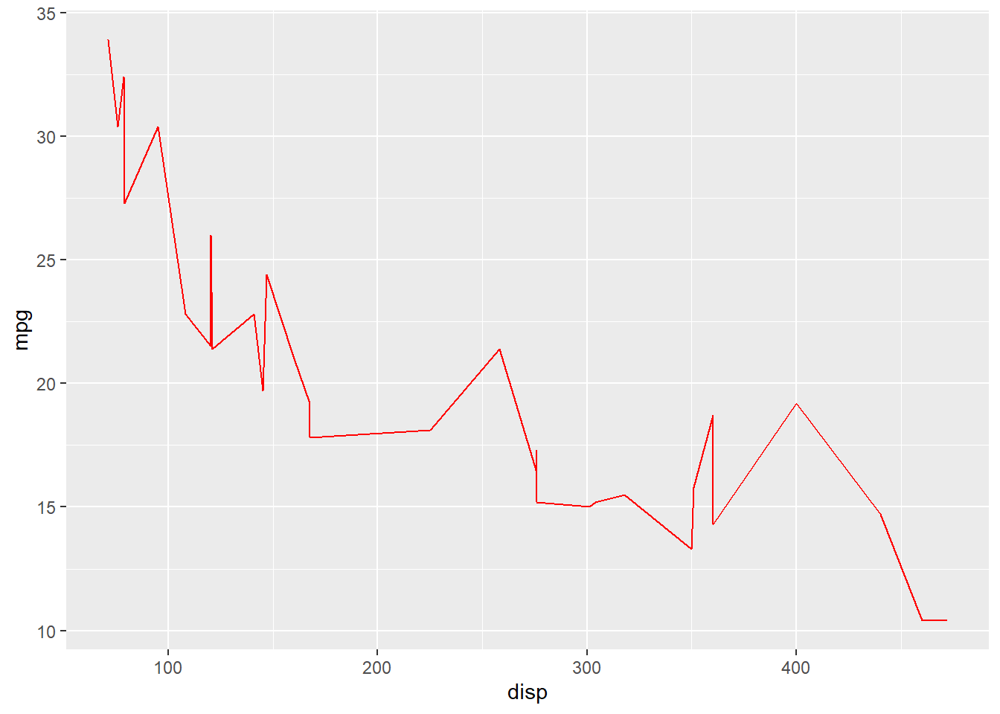
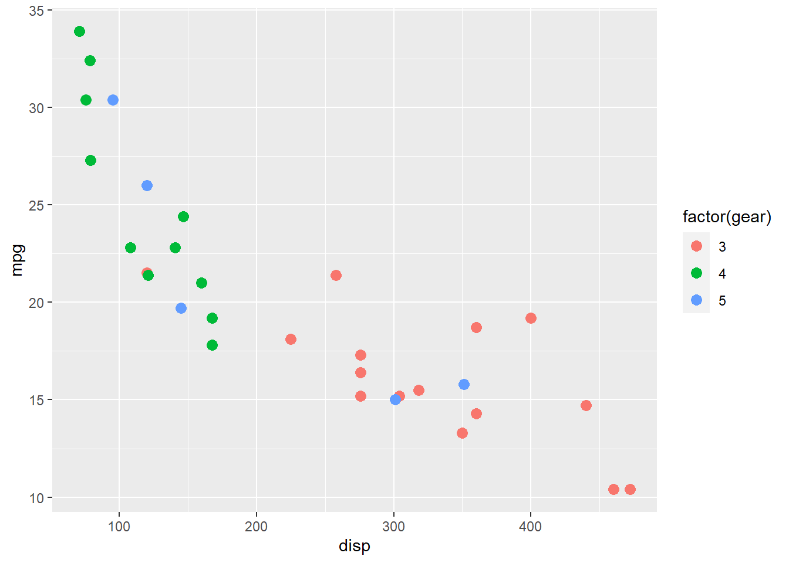
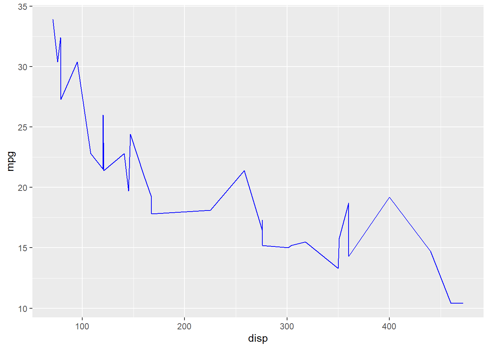
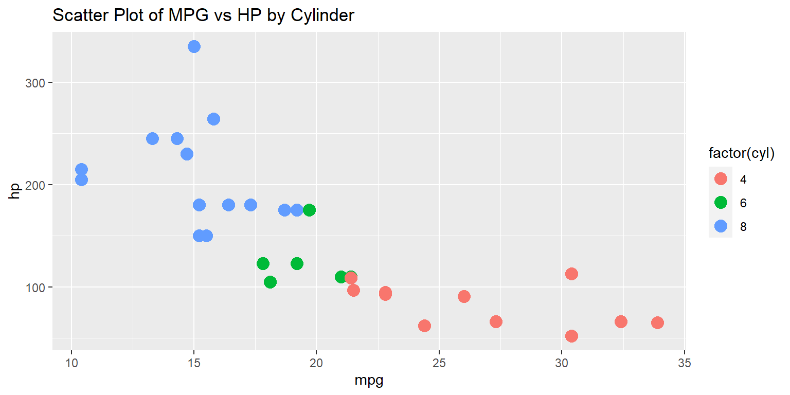
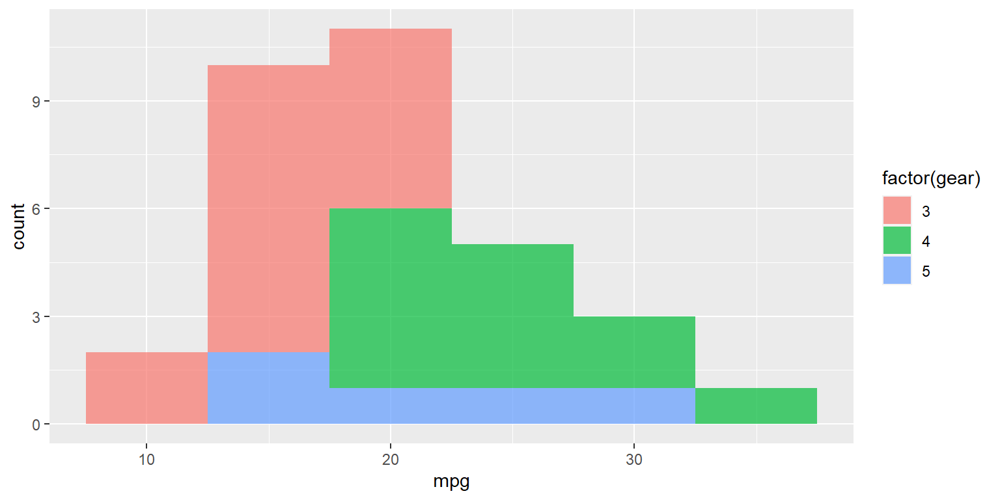
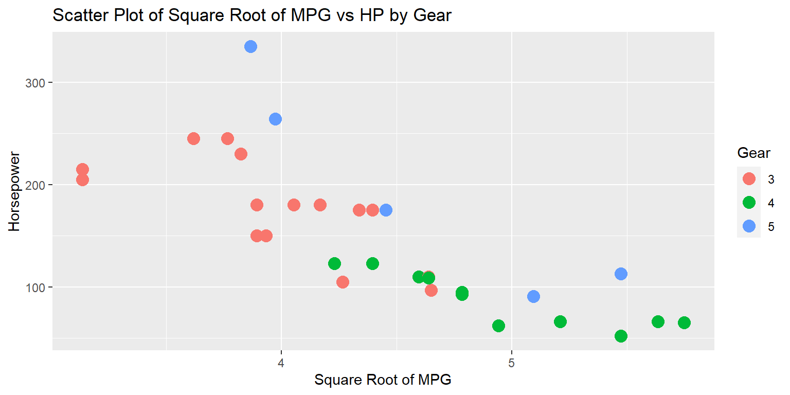
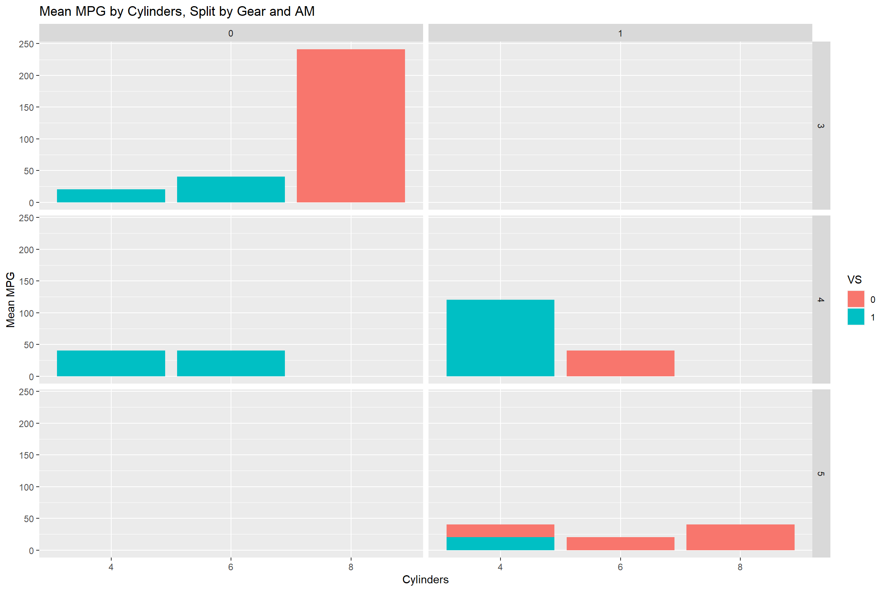
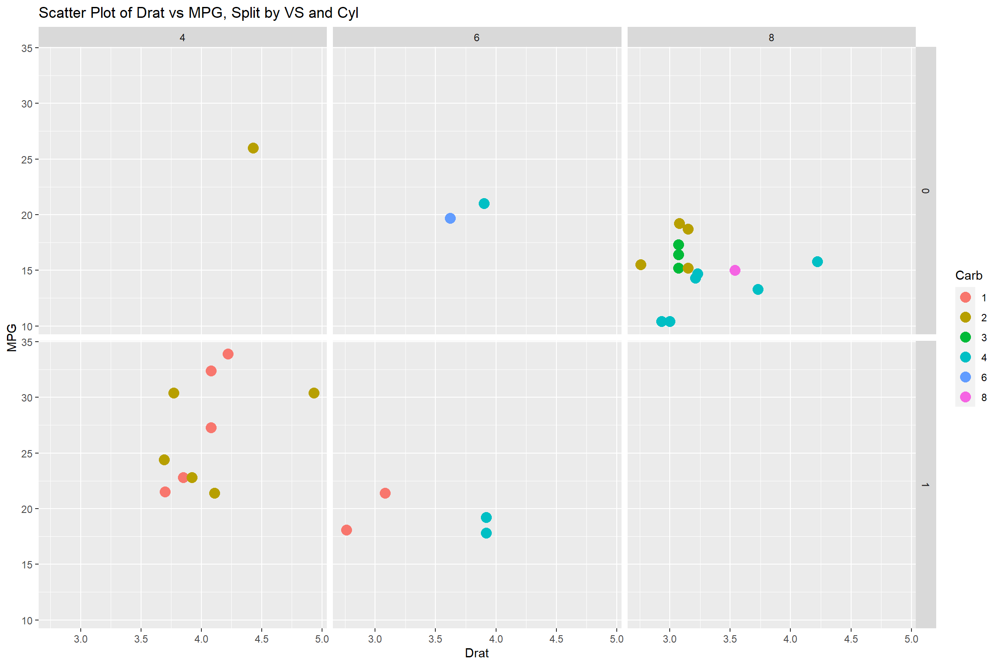

Examples
plotting with ggplot2
SQUARE consultants
square.research.vub.be
Exercise 1: Create a scatter plot using the “mtcars” dataset, where the x-axis represents “disp” and the y-axis represents “mpg.” Color the points based on the “cyl” variable.
Exercise 2: Create a line plot using the “mtcars” dataset, connecting the observations based on the “mpg” and “disp” variables. Set the line color to be red.

Exercise 3: Create a scatter plot using the “mtcars” dataset, where the x-axis represents “disp” and the y-axis represents “mpg.” Color the points based on the “gear” variable and adjust the point size to 3.

Exercise 4: Create a line plot using the “mtcars” dataset, connecting the observations based on the “mpg” (y) and “disp” (x) variables. Set the line color to be blue and adjust the line width to 0.5.
Warning: Using `size` aesthetic for lines was deprecated in ggplot2 3.4.0.
ℹ Please use `linewidth` instead.
Set 2: Exercise 1: Create a scatter plot with the mtcars dataset, using the geom_point function. Map the mpg variable to the x-axis and the hp variable to the y-axis. Color the points based on the cyl variable. Set the size of the points to 4. Add a title to the plot.

Exercise 2: Create a histogram of the mpg variable from the mtcars dataset. Use the geom_histogram function and specify a binwidth of 5. Color the bars based on the gear variable and make them partially transparent with an alpha of 0.7. Don’t forget to add a legend.

Set 3: Exercise 1: Create a scatter plot of mpg against hp from the mtcars dataset, but this time, color the points using the gear variable. Apply a square root transformation to the x-axis (mpg) using the scale_x_sqrt function. Don’t forget to add appropriate labels and a title to the plot.

Exercise 2: Create a bar chart displaying the mean mpg for each level of the cyl variable. Color the bars using the vs variable. Use the geom_bar function and apply the facet_grid function to split the visualization into rows based on the gear variable and columns based on the am variable.

Exercise 3: Create a scatter plot of drat against mpg from the mtcars dataset, and color the points using the carb variable. Split the plot into rows and columns using the facet_grid function. Rows should correspond to the vs variable, and columns should correspond to the cyl variable.
